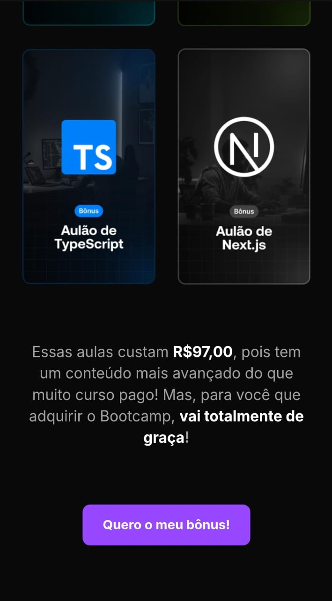

O QUE É UMA LANDING PAGE?
Uma landing page é uma página da web projetada para converter visitantes em leads ou clientes. Ela geralmente contém informações sobre um produto, serviço ou oferta específica, com o objetivo de persuadir os visitantes a realizar uma ação, como preencher um formulário, fazer uma compra ou se inscrever em uma lista de e-mails.
